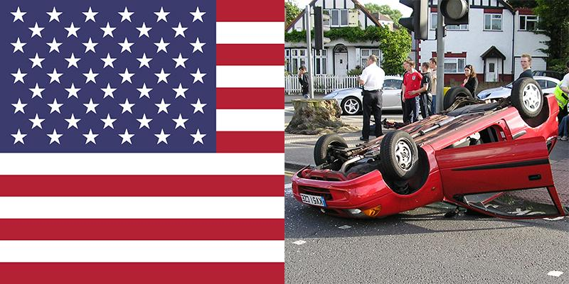

US Accidents Database
About the Data
This is a countrywide car accident dataset, which covers 49 states of the USA. The accident data are collected from February 2016 to June 2020, using two APIs that provide streaming traffic incident (or event) data. These APIs broadcast traffic data captured by a variety of entities, such as the US and state departments of transportation, law enforcement agencies, traffic cameras, and traffic sensors within the road-networks. Currently, there are about 3.5 million accident records in this dataset. We retrieved the dataset from here.
About our Database
Tables
For our database, we chose to break the data down into four separate tables:
Accidents, Area Description, Time of Day, and Weather Condition Info.
Accidents
This table holds overall information about the accident in terms of when
the accident occurred, where it took place, and the severity of the accident.
The following fields are present in this table:
- ID: unique identification number for the accident
- Source: the source the person used for directions
- TMC: stands for traffic message channel
- Severity: represents how severe the accident was (levels 1-4)
- Start Time: beginning date and time of the accident
- End Time: ending date and time of the accident
- Start Latitude: beginning latitude of the accident
- Start Longitude: beginning longitude of the accident
- End Latitude: ending latitude of the accident
- End Longitude: ending longitude of the accident
- Distance: distance travelled due to the accident
- Description: description written down of the accident
- Street Num: street number closest to the accident
- Street: name of street that the accident occurred on
- Side: side of the road where the accident occurred
- City: city where the accident occurred
- County: county where the accident occurred
- State: state where the accident occurred
- Zip Code: zip code where the accdent occurred
- Country: country where the accident occurred
- Timezone: timezone where the accident occurred
- Airport Code: code of the nearest airport to the accident
- Weather Timestamp: timestamp when the weather conditions were taken
This table had the overall description of the accident area in terms of many road elements. The following fields are present in the table:
- Start Latitude: beginning latitude of the accident
- Start Longitude: beginning longitude of the accident
- Amenity: a person sustained a life changing injury due to the accident.
- Bump: a bump in the road where the accident occurred.
- Crossing: a crosswalk or a crossing warning sign covered the area.
- Give Way/Yield: A yield sign was near the sight of the accident.
- Junction: a road had multiple paths for the person to take where the accident occurred.
- No Exit: no exit sign was near the accident.
- Roundabout: the accident occurred near a roundabout in the road.
- Stop Signal: someone ran a stop sign to cause the accident.
- Traffic Calming: the traffic was calming down when the accident occurred.
- Traffic Signal: a traffic light was near the accident.
- Turning Loop: the accident occurred near a turning loop in the road.
This table represents the time of day and what the sky looked like at the time of the accident. The following fields are present in this table:
- City: city where the accident occurred
- State: state where the accident occurred
- Start Time: beginning date and time of the accident
- Sunrise/Sunset: determines if the accident happened during a sunrise or sunset
- Civil Twilight: determines if the accident happened during a civil twilight
- Nautical Twilight: determines if the accident happened during a nautical twilight
- Astronomical Twilight: determines if the accident happened during an astoronomical twilight
This table holds the relevant information about the weather conditions at the time of the accident including wind chill, humidity, and wind speed. The following fields are present in this table:
- Airport Code: code of the nearest airport to the accident
- Weather Timestamp: timestamp when the weather conditions were taken
- Temperature: current temperature at the time of the accident
- Wind Chill: how cold the wind caused the weather to be
- Humidity: how humid the area was at the time of the accident
- Pressure: total pressure in the surrounding area of the accident
- Wind Direction: direction of the wind where the accident took place
- Wind Speed: speed of the wind where the accident took place
- Precipitation: percentage of precipitation near the accident
- Weather Condition: condition of the weather